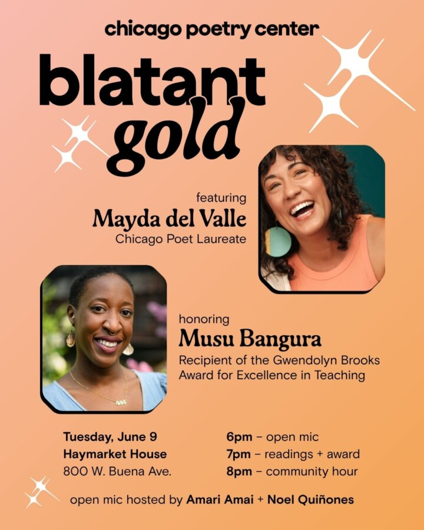

Blatant Gold
Every year, the Chicago Poetry Center’s summer poetry gathering brings together the city’s literary community. In 2026, Blatant Gold features Chicago Poet Laureate Mayda del Valle and honors Musu Bangura, recipient of the Gwendolyn Brooks Award for Excellence in Teaching.
Join us for an open mic, watch performances by the featured poets, and raise a glass to the writers, readers, and teachers of Chicago poetry!